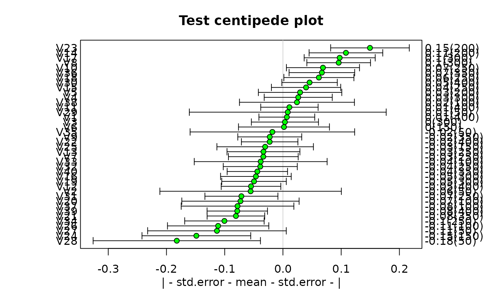
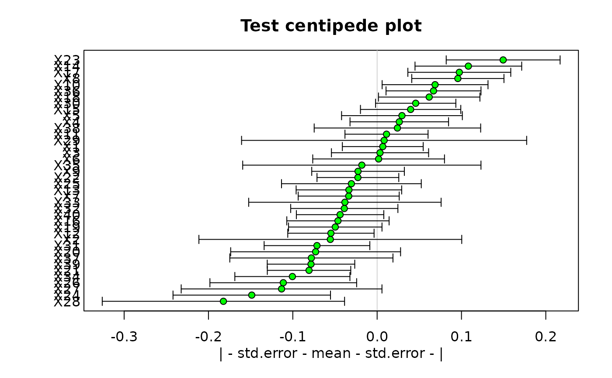

Display a centipede plot
centipede.plot.RdDisplays a centipede plot on the current graphics device.
Usage
centipede.plot(segs,mct="mean",lower.limit="std.error",
upper.limit=lower.limit,left.labels=NULL,right.labels=NULL,sort.segs=TRUE,
main="",xlab=NA,pch=21,vgrid=NA,hgrid=NA,gridcol="lightgray",mar=NA,col=par("fg"),
bg="green",...)Arguments
- segs
a matrix of midpoints and limits calculated by get.segs OR a dstat object returned by brkdn.
- mct
The function to use in calculating the midpoint of each segment.
- lower.limit
The functions to use in calculating the lower limits for each subset of the data.
- upper.limit
The functions to use in calculating the upper limits.
- left.labels
The variable or subset labels to place at the left margin of the plot. Default values are provided.
- right.labels
The variable or subset labels to place at the right margin of the plot.
- sort.segs
Whether to sort the segments in ascending order.
- main
Optional title for the plot.
- xlab
Optional x axis label for the plot. The default NA displays a text label showing the midpoint and limit functions.
- pch
The symbols to use when plotting midpoints.
- vgrid
Optional vertical line(s) to display on the plot. Defaults to NA (none).
- hgrid
Optional horizontal grid lines to display on the plot. Defaults to NA (none).
- gridcol
The color for the vgrid and hgrid lines.
- mar
Margin widths for the plot. Defaults to c(4,5,1,4) or c(4,5,3,4) if there is a title.
- col
The color(s) of the limit lines and borders of the midpoint markers.
- bg
The color(s) to fill the midpoint markers.
- ...
additional arguments passed to plot.
Details
centipede.plot displays one or more midpoints and limits as filled circles with horizontal error bars. It places labels on the left and right sides of the plot. If these labels are long, it may be necessary to pass explicit values to the mar argument to leave enough room.
The vgrid argument is usually used to display an average value for all of the midpoints. If one or more values are passed in this argument, they will be displayed as vertical lines spanning the plot. The hgrid argument acts like the grid function, drawing dashed horizontal lines across the plot. If hgrid=NULL, these lines will be drawn under the values displayed, which will be 1 to the number of values on the vertical axis. The user can pass explicit values if desired. With horizontal and optionally vertical grid lines, the centipede plot is practically equivalent to a dotplot with error bars.
Similarly, centipede plots typically have a large number of subsets, and it may be necessary to start the graphics device with an aspect ratio that will prevent crowding of the labels when over 30 segments are displayed.
The matrix segs may be entered manually or read from a file. The first row specifies midpoints, the second and third rows the lower and upper limits respectively and the fourth row the number of valid observations. If there are no values for number of valid observations, just pass vector of blank strings with the right.labels argument. If a dstat object is passed as segs, the function will calculate the lower and upper values according to the relevant arguments. This type of plot is also known as a caterpillar plot or a league table.
Examples
testcp<-list("",40)
for(i in 1:40) testcp[[i]]<-rnorm(sample(1:8,1)*50)
segs<-get.segs(testcp)
centipede.plot(segs,main="Test centipede plot",vgrid=0)
#> Warning: argument 1 does not name a graphical parameter

# now leave out the number of valid observations, pass x labels and no right labels
centipede.plot(segs[1:3,],main="Test centipede plot",vgrid=0,mar=c(4,5,3,2),
left.labels=paste("X",1:40,sep=""),right.labels=rep("",40))
#> Warning: argument 1 does not name a graphical parameter
